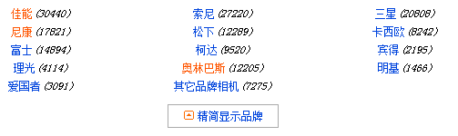

通过点击按钮将精简的文字切换成完整的文字，这在网页中是比较常见的，通过javaScript dom操作可以实现这一功能。这里讲一下jquery的方法。
因为jquery大大的缩减了代码量，所以在熟练使用jquery的情况下，能够减少工作量，提高效率，这也算是学习jquery的第一大好处。Jquery的宗旨就是‘Write less do more’，「多学一点知识，少写一行代码」……
下面以点击切换显示隐藏为例，展示一下jquery的强大之处。
我们先创建一个列表。
<div class="SubCategoryBox"><ul>
<li ><a href="#">佳能</a><i>(30440) </i></li>
<li ><a href="#">索尼</a><i>(27220) </i></li>
<li ><a href="#">三星</a><i>(20808) </i></li>
<li ><a href="#">尼康</a><i>(17821) </i></li>
<li ><a href="#">松下</a><i>(12289) </i></li>
<li ><a href="#">卡西欧</a><i>(8242) </i></li>
<li ><a href="#">富士</a><i>(14894) </i></li>
<li ><a href="#">柯达</a><i>(9520) </i></li>
<li ><a href="#">宾得</a><i>(2195) </i></li>
<li ><a href="#">理光</a><i>(4114) </i></li>
<li ><a href="#">奥林巴斯</a><i>(12205) </i></li>
<li ><a href="#">明基</a><i>(1466) </i></li>
<li ><a href="#">爱国者</a><i>(3091) </i></li>
<li ><a href="#">其它品牌相机</a><i>(7275) </i></li>
</ul></div>
列表创建完毕之后，现在我们想要仅仅显示前五个元素，后边的暂时隐藏，然后添加一个按钮，名字叫显示全部品牌。
我们先创建一个列表。
<div class="showmore">
<a href="more.html"><span>显示全部品牌</span></a>
</div>
然后我们对script进行编写。
<script>
$(function(){ // 等待DOM加载完毕.
var $category = $('ul li:gt(5):not(:last)'); // 获得索引值大于5的品牌集合对象(除最后一条)
$category.hide(); // 隐藏上面获取到的jQuery对象。
var $toggleBtn = $('div.showmore > a'); // 获取“显示全部品牌”按钮
$toggleBtn.click(function(){
if($category.is(":visible")){
$category.hide(); // 隐藏$category
$('.showmore a span')
.css("background","url(img/down.gif) no-repeat 0 0")
.text("显示全部品牌"); //改变背景图片和文本
$('ul li').removeClass("promoted"); // 去掉高亮样式
}else{
$category.show(); // 显示$category
$('.showmore a span')
.css("background","url(img/up.gif) no-repeat 0 0")
.text("精简显示品牌"); //改变背景图片和文本
$('ul li').filter(":contains('佳能'),:contains('尼康'),:contains('奥林巴斯')")
.addClass("promoted"); //添加高亮样式
}
return false; //超链接不跳转
})
})
</script>
剥离出其中的关键操作：
var $category = $('ul li:gt(5):not(:last)'); // 获得索引值大于5的品牌集合对象(除最后一条)
$category.hide(); // 隐藏上面获取到的jQuery对象。
$toggleBtn.click(function(){
if()){ }
else{ }
最后别忘了加入：
return false;
将禁止按钮的页面跳转。（为什么一定要给button添加链接呢，这涉及到javaScript操作的平稳退化，在下一篇文章我会写一写）。
效果图

Ps:这一篇没什么难度，主要是培养自己写学习笔记的习惯，同时丰富一下页面内容。也方便日后自己回顾自己的学习内容。